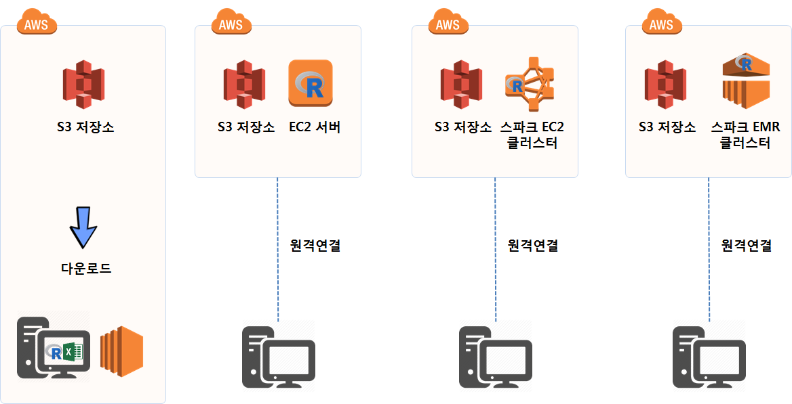

기계학습
기계학습 클라우드(AWS) 개발배포 환경
학습 목표
- 기계학습을 위한 클라우드 개발환경을 구축한다.
- 다양한 환경에 따라 유연하게 기계학습 환경을 구축하고 장단점을 파악한다.
- 클라우드(AWS) 위에 FTP부터 스파크 분석환경까지 구축하는 다양한 시나리오를 검토한다.
- R 언어를 핵심 언어로 데이터제품 개발을 목표로 전체적인 과정을 살펴본다.
1. 기계학습을 위한 AWS 클라우드 환경
데이터 로그가 AWS S3에 저장되면 대용량 데이터를 바로 S3 Browser 혹은 AWS CLI 복사 명령어를 통해 로컬 컴퓨터에 저장하여 R, 파이썬 엑셀로 분석하는 형태부터 단속적으로 스파크 EMR 클러스터를 잠시 띄워 작업하고 없애는 방식까지 다양한 스펙트럼이 존재한다.
- S3 + 로컬 컴퓨터 : 기존 MySQL 데이터베이스에서 데이터를 추출하여 PC에서 분석하는 전형적인 형태
- S3 + EC2 서버: 데이터를 로컬PC등으로 내려 분석하지 않고 모든 데이터를 클라우드 EC2에서 데이터 분석
- S3 + 스파크 EC2 클러스터: 상태정보를 항시 보유하고 있는 EC2 클러스터를 구성하여 S3 데이터를 분석
- S3 + 스파크 EMR 클러스터: 단속적으로 필요시 대량 EMR 클러스터를 구축하여 S3 데이터를 분석

1.1. 클라우드 S3 데이터 저장
개인이 식별될 수 있는 데이터는 모형개발과 데이터 분석에는 도움이 되지 않는다. 개인이 식별되는 유일한 정보는 하나이기 때문에 데이터 분석이 끝나 뒤나 실행에 옮기기 위해서 필요한 정보이기 때문에 데이터 분석과 모형 개발을 위해서는 개인정보를 난독화하는 해쉬함수를 활용하여 난독화 과정을 거치 데이터를 폐쇄 개발망에서 오픈된 인터넷망에서 분석환경을 별도로 구축하는 것도 가능하다.
폐쇄망에서 인터넷망으로 가져오는 과정에서 .csv 파일을 파케이 파일로 변환하여 저장공간을 대폭줄여 이동시키고 나서 EC2, EMR 스파크 클러스터를 통해 데이터 분석 및 모형개발 작업을 수행한다.
1.2. 데이터 과학 분석 R 인프라 1
작업장 분석에 필요한 데이터가 준비되면 이를 분석할 수 있는 데이터 과학 인프라 구축이 필요하다.
- 스몰데이터(일회성, 분석속도, 동일하지 않는 데이터) : S3에서 데이터를
S3 Browser를 통해 다운받아 데이터 분석가 분석 PC에서 작업 [^s3-pc] - 중형데이터: 데이터 분석가 PC는 단순한 터미널 기능을 수행하고 S3 데이터와 EC2 컴퓨터는 모두 AWS 클라우드에 위치
- 빅데이터 (동일한, 반복적인, 서버별 대용량 데이터) 및 예측모형 개발
- AWS S3 + 스파크 + EC2 스파크 클러스터
- AWS S3 + 스파크 + EMR 스파크 클러스터

데이터가 넘처나는 상황에서 데이터를 저장할 저장소가 필요한데 AWS S3가 가능한 저장소 중의 하나가 될 것이다. AWS S3에 저장된 데이터를 하둡으로 데이터관리시스템으로 활용할 경우 분석을 위해서 너무 큰 데이터 중 일부를 표본추출하는 방법도 있지만, 스파크를 활용하는 것도 가능하다. 스파크를 R에서 사용할 수 있도록 sparklyr 팩키지를 설치하여 R에서 대용량 데이터를 분석한다.
데이터도 방대하여 분석할 수 있는 분석환경도 스파크 클러스터를 꾸리지 않으면 병목현상으로 상당한 시간이 소요될 수 있으니 이점을 유념한다.
2. 대용량 데이터 분석 환경 비교 2
대용량 데이터를 분산처리작업을 진행하기 전에 현존하는 분산기술에 대해 살펴보자.
| 접근방법 | 확장성(Scalability) | 스파크 | 하둡 | SQL | 라이선스 |
|---|---|---|---|---|---|
| CRAN \(R_1\) | 컴퓨터 1 대 | 오픈 | |||
| bigmemory | 컴퓨터 1 대 | 오픈 | |||
| ff | 컴퓨터 1 대 | 오픈 | |||
| SparkR | 컴퓨터 1 대 + 분산 컴퓨팅 | X | X | 오픈 | |
| sparklyr | 컴퓨터 1 대 + 분산 컴퓨팅 | X | X | 오픈 | |
| RevoScaleR | 컴퓨터 1 대 + 분산 컴퓨팅 | X | X | X | 기업 |
스파크 클러스터가 구축되면 R 환경은 다음과 같다. 3
- 데이터 저장: Hive
- 스파크 응용프로그램 실행: YARN 클러스터
- 데이터 코드: dplyr이 지원되는 R
3. 클라우드를 활용한 데이터 분석 시나리오
데이터분석을 위해 필요한 경우 상황에 맞춰 AWS를 활용하는 시나리오는 다음과 같다.
- 시나리오 1. : AWS 클라우드의 저장소 기능(S3)만 활용
- 시나리오 2. : AWS 클라우드의 연산기능(EC2)만 활용
- 시나리오 3. : AWS 클라우드의 저장소 기능(S3)과 연산기능(EC2) 모두 활용
각 시나리오별 장단점과 필요성은 각자 직면한 환경에 따라 차이가 나기 때문에 우열을 가리는 것은 무의미하다.

4. R 언어를 기반으로 데이터 제품까지 과정
상기 과정을 조합하여 빅데이터 기반 개발 및 운영환경을 R기반으로 구축할 경우 다음과 같은 작업흐름도 가능하게 된다. 다양한 조합중에 한가지 사례를 소개하면 다음과 같다.
- 데이터 저장소(S3): 빅데이터의 경우 테라바이트가 넘는 경우가 흔해서 사람이 읽을 수 있는
.csv형태 데이터를 저장소에 넣게 되면 파일 크기가 문제가 된다. 단순히 파일 크기가 큰 것이 문제가 되는 것이 아니라 이를 다른 컴퓨터에 이동이나 복사를 할 경우 네트워크에 상당한 부하를 주고 장시간 시간도 소요된다. 이런 문제로 인해서파케시(Parquet)파일이 등장하게 된다. 즉, 동일한 정보를 높은 압축률로 압축시켜 저장한다. - 대용량 데이터 처리(Spark): 빅데이터의 경우 고성능 한대의 컴퓨터에서 처리하는 것보다 작업을 나누어서 분산처리하는 것이 훨씬 더 높은 효율을 갖게 된다. 빅데이터를 R에서 읽어올 경우 시간도 오래 소요되고 컴퓨터가 다운되는 경험은 아마도 다수 사람들이 경험을 했을 것이다. 엑셀도 예외는 아니다. 이런 목적으로 하둡-스파크 EMR 클러스터를 구축하여 대용량 데이터를 모형개발에 적합한 형태로 가공한다. 수천에서 수만, 수백만분의 1로 정보를 압축한 형태로의 R 데이터프레임으로 가공하여 저장한다.
- 모형개발 서버(EC2): 예측모형을 비롯한 다양한 데이터제품을 개발할 경우 Random Forest 유형의 모형개발에는 병렬처리가 적합하다. 이를 위해 다수 코어를 갖추고 메모리도 충분한 기계학습 전용 EC2 컴퓨터를 준비하고 학습 및 모형을 개발한다.
- R 마크다운: 모형이 개발되었으면 이를 활용하는 단계로 넘어가는데 이때 R 마크다운이 유용한다. R 마크다운으로
flashdashboard,Shiny를 활용하여 데이터 제품을 개발해낸다. - Shiny 웹서버: 최종 산출물을 Shiny 웹서버에 올려 이를 활용한다.
즉, 데이터 저장 → 하둡스파크 → EC2 병렬처리 컴퓨터 → R마크다운 → Shiny 웹서버로 넘어가는 과정을 밟게 된다.